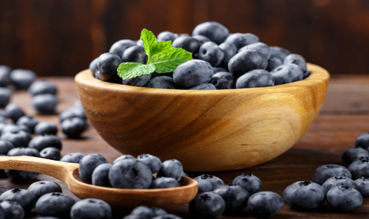
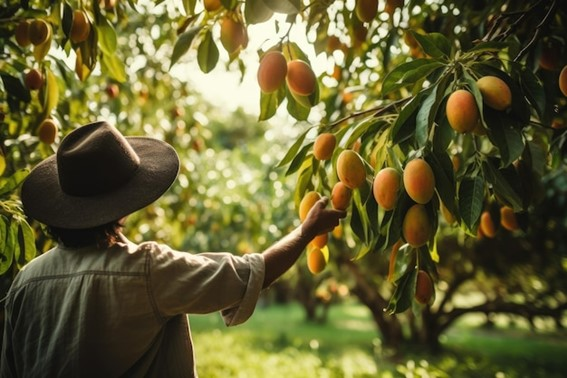
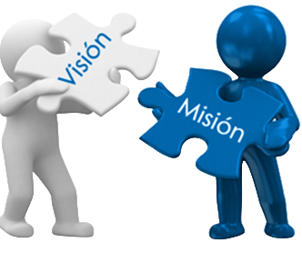

Nuestra Historia
Fruit Perú fue fundada en el año 2021 por un grupo de jóvenes emprendedores con una visión clara: aprovechar el potencial agrícola del Valle del Norte de Perú para producir y exportar frutas de alta calidad a mercados internacionales. Desde sus inicios, la empresa se enfocó en cuatro productos clave: arándano, mango, uva y avocado (palta). Estos cultivos fueron seleccionados por su alta demanda en el mercado global, así como por las condiciones óptimas que ofrece la región para su producción.
En el primer año, Fruit Perú adquirió 150 hectáreas de tierra fértil en el Valle del Norte. La empresa invirtió en tecnología de punta para la irrigación y manejo de cultivos, implementando prácticas agrícolas sostenibles y respetuosas con el medio ambiente. Este enfoque permitió establecer una base sólida para los cultivos, garantizando una producción de alta calidad desde el principio.
En el segundo año, la cosecha de arándanos y mangos superó las expectativas iniciales, lo que permitió a la empresa realizar sus primeras exportaciones a Estados Unidos y Europa. La calidad superior de sus productos, junto con una logística eficiente, posicionó rápidamente a la empresa como un proveedor confiable en el mercado internacional. Durante este período, Fruit Perú amplió su capacidad de producción al adquirir maquinaria avanzada para el empaque y procesamiento de frutas. La empresa también fortaleció sus relaciones con agricultores locales, brindándoles capacitación y apoyo técnico para mejorar sus prácticas agrícolas y asegurar un suministro constante de productos frescos.
En su tercer año de operación, Fruit Perú consolidó su posición en el mercado internacional logrando acuerdos comerciales con grandes distribuidores en Asia, aumentando significativamente su volumen de exportaciones de uva y avocado. Además, gracias a su compromiso con la calidad y sostenibilidad, Fruit Perú obtuvo varias certificaciones internacionales que avalan sus prácticas agrícolas y su respeto por el medio ambiente.
Ese mismo año, la empresa inauguró una planta de empaque de última generación, lo que le permitió optimizar el proceso de exportación y reducir los tiempos de entrega. Con una capacidad operativa ampliada, por lo que, no solo aumentó su producción, sino que también creó empleo para la comunidad local, contribuyendo al desarrollo económico de la región.
Fruit Peru sigue mirando hacia el futuro con ambición y determinación. La empresa planea diversificar aún más su cartera de productos y explorar nuevos mercados emergentes. Con un enfoque continuo en la innovación, sostenibilidad y calidad, Fruit Peru está preparada para convertirse en un líder global en el sector agroexportador, llevando los mejores sabores del Valle del Norte al mundo entero.


Estamos orientados a desarrollar nuestras capacidades con excelencia para satisfacer a nuestros clientes, quienes aprecian la comprobada calidad y competitividad de nuestros productos.
Ser reconocidos a nivel mundial como principal aliado estratégico por la calidad de nuestros productos. Estableciendo relaciones sólidas, innovadoras y sostenibles con nuestros clientes y socios comerciales, buscando constantemente la satisfacción y mejora continua en nuestros procesos.

Nuestra misión es producir y comercializar productos de la más alta calidad que satisfagan las necesidades y superen las expectativas de los clientes nacionales e internacionales, ofreciendo productos frescos y saludables, proporcionando oportunidades de crecimiento y desarrollo en las comunidades donde operamos.